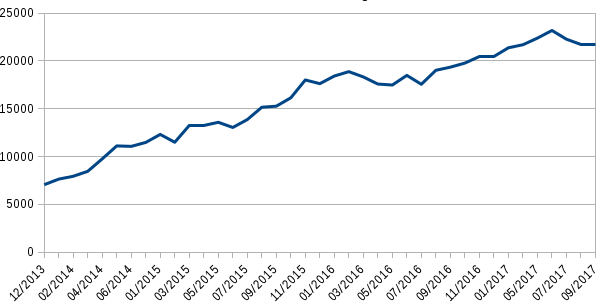

Today we are asking you to give us a hand to fund our work in 2018.
Tails protects thousands of people everyday to be safe online and we give out Tails for free because we believe that nobody should have to pay to be protected from surveillance and censorship.
We've all become used to get content and tools on the Internet without paying for them. But you know that this is the result of users having become the new product. While sharing images and messages online, users generate page and advertisement views — which in turn generate income, reaching up to several billions of dollars for some companies.
At Tails we will never sell your data, nor send you targeted advertising. And we will never sell our project to a company. We have made this clear in our Social Contract. This contract is our public promise to our users as well as to the rest of the world, and with it, we are affirming a commitment to our beliefs.
Being free software is a necessary requirement for our tools to be safe and to protect you as intended. If our source code was closed, there would be no way of actually verifying that our software is trustworthy.
Last year we've made it clear how much of our overall budget came from government grants and that, in order to remain independent and to use our money in the best interest of our users, we needed to be able to rely on donations. Our first donation campaign was a big success in that regard: your donations covered nearly one third of our budget of 2017.
Our yearly expenses equal 230.000 € on average since 2015 - which is a very small budget compared to the multi billionaire companies and agencies running the surveillance business. Many of us still do a lot of work during their free time.
While last year's fundraising success was amazing, 2018 will arrive fast and our user base is continuously growing. During 2017 we counted 22.061 boots per day on average. (How do we know this?) Many hands make Tails: If each of our users gave $15, our budget for the whole year would be raised within one day. If we could fund Tails entirely through donations by our users, this would make us independent from government grants.
This image shows the evolution of Tails boots per day since 2013: 
But many of our users could actually get in trouble if they donated to an anti-surveillance tool like Tails. So when donating to Tails you are also giving a hand to these people by keeping Tails alive. Please consider setting up a yearly or monthly donation.
Last year, we received 2.043 individual donations. If you want Tails to survive and be largely independent from government grants, please take a minute and give us a hand!